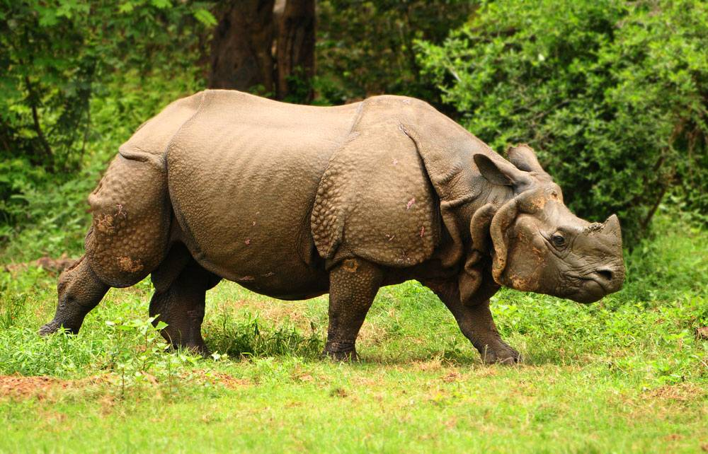
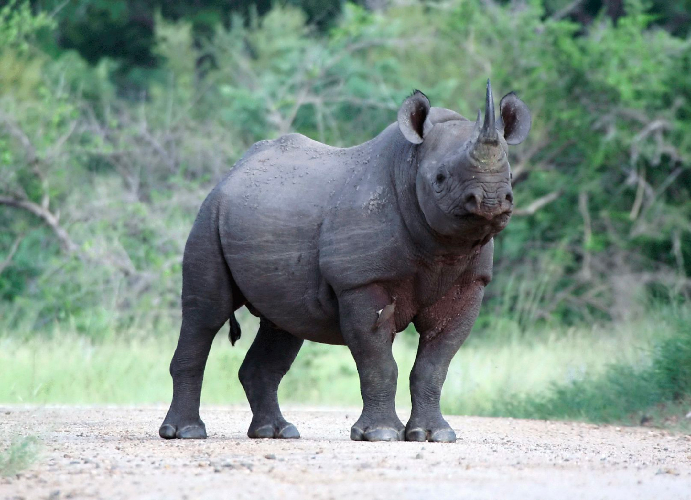
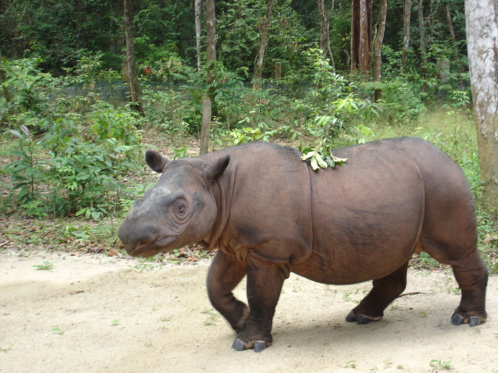

Species
White Rhino

There are two subspecies of white rhinoceros: the southern white rhinoceros (Ceratotherium simum simum) and the northern white rhinoceros (Ceratotherium simum cottoni). As of 2013, the southern subspecies has a wild population of 20,405—making them the most abundant rhino subspecies in the world. The northern subspecies is critically endangered, with all that is known to remain being two captive females. There is no conclusive explanation of the name "white rhinoceros". A popular idea that "white" is a distortion of either the Afrikaans word wyd or the Dutch word wijd (or its other possible spellings whyde, weit, etc.,), meaning "wide" and referring to the rhino's square lips, is not supported by linguistic studies.
The white rhino has an immense body and large head, a short neck and broad chest. Females weigh 1,600 kg (3,500 lb) and males 2,400 kg (5,300 lb). The head-and-body length is 3.5–4.6 m (11–15 ft) and the shoulder height is 1.8–2 m (5.9–6.6 ft). On its snout it has two horns. The front horn is larger than the other horn and averages 90 cm (35 in) in length and can reach 150 cm (59 in). The white rhinoceros also has a prominent muscular hump that supports its relatively large head. The colour of this animal can range from yellowish brown to slate grey. Most of its body hair is found on the ear fringes and tail bristles, with the rest distributed rather sparsely over the rest of the body. White rhinos have the distinctive flat broad mouth that is used for grazing.
Black Rhino

The name "black rhinoceros" (Diceros bicornis) was chosen to distinguish this species from the white rhinoceros (Ceratotherium simum). This can be confusing, as the two species are not truly distinguishable by color. There are four subspecies of black rhino: South-central (Diceros bicornis minor), the most numerous, which once ranged from central Tanzania south through Zambia, Zimbabwe and Mozambique to northern and eastern South Africa; South-western (Diceros bicornis occidentalis) which are better adapted to the arid and semi-arid savannas of Namibia, southern Angola, western Botswana and western South Africa; East African (Diceros bicornis michaeli), primarily in Tanzania; and West African (Diceros bicornis longipes) which was declared extinct in November 2011.[14] The native Tswanan name keitloa describes a South African variation of the black rhino in which the posterior horn is equal to or longer than the anterior horn.
An adult black rhinoceros stands 1.50–1.75 m (59–69 in) high at the shoulder and is 3.5–3.9 m (11–13 ft) in length.[16] An adult weighs from 850 to 1,600 kg (1,870 to 3,530 lb), exceptionally to 1,800 kg (4,000 lb), with the females being smaller than the males. Two horns on the skull are made of keratin with the larger front horn typically 50 cm long, exceptionally up to 140 cm. Sometimes, a third smaller horn may develop.[17] The black rhino is much smaller than the white rhino, and has a pointed mouth, which it uses to grasp leaves and twigs when feeding.
During the latter half of the 20th century, their numbers were severely reduced from an estimated 70,000[18] in the late 1960s to a record low of 2,410 in 1995. Since then, numbers have been steadily increasing at a continental level with numbers doubling to 4,880 by the end of 2010.[citation needed] As of 2008, the numbers are still 90% lower than three generations ago.[
Indian Rhino
The Indian rhinoceros, or greater one-horned rhinoceros, (Rhinoceros unicornis) has a single horn 20 to 60 cm long.[20] It is nearly as large as the African white rhino. Its thick, silver-brown skin folds into the shoulder, back, and rump, giving it an armored appearance. Its upper legs and shoulders are covered in wart-like bumps, and it has very little body hair. Grown males are larger than females in the wild, weighing from 2,500–3,200 kg (5,500–7,100 lb). Shoulder height is 1.75–2.0 m (5.7–6.6 ft). Females weigh about 1,900 kg (4,200 lb) and are 3–4 m (9.8–13 ft) long. The record-sized specimen was approximately 4,000 kg (8,800 lb)
Indian rhinos once inhabited many areas ranging from Pakistan to Myanmar and maybe even parts of China. Because of humans, they now exist in only several protected areas of India (in Assam, West Bengal, and a few pairs in Uttar Pradesh) and Nepal, plus a pair in Lal Suhanra National Park in Pakistan reintroduced there from Nepal. They are confined to the tall grasslands and forests in the foothills of the Himalayas. Two-thirds of the world's Indian rhinoceroses are now confined to the Kaziranga National Park situated in the Golaghat district of Assam, India.
Javan Rhino
The Javan rhinoceros (Rhinoceros sondaicus) is one of the most endangered large mammals in the world.[23] According to 2015 estimates, only about 60 remain, in Java, Indonesia, all in the wild. It is also the least known rhino species. Like the closely related, and larger, Indian rhinoceros, the Javan rhino has a single horn. Its hairless, hazy gray skin falls into folds into the shoulder, back, and rump, giving it an armored appearance. Its length reaches 3.1–3.2 m (10–10 ft) including the head, and its height 1.5–1.7 m (4 ft 11 in – 5 ft 7 in). Adults are variously reported to weigh 900–1,400 kg[24] or 1,360–2,000 kg.[25] Male horns can reach 26 cm in length, while in females they are knobs or altogether absent.[25] These animals prefer dense lowland rain forest, tall grass and reed beds that are plentiful with large floodplains and mud wallows.
Though once widespread throughout Asia, by the 1930s they were nearly hunted to extinction in Nepal, India, Burma, Peninsular Malaysia, and Sumatra for the supposed medical powers of their horns and blood. As of 2015, only 58–61 individuals remain in Ujung Kulon National Park, Java, Indonesia. The last known Javan rhino in Vietnam was reportedly killed for its horn in 2011 by Vietnamese poachers. Now only Java contains the last Javan rhinos.
Sumatran Rhino
The Sumatran rhinoceros (Dicerorhinus sumatrensis) is the smallest extant rhinoceros species, as well as the one with the most hair. It can be found at very high altitudes in Borneo and Sumatra. Due to habitat loss and poaching, their numbers have declined and it has become the second most threatened rhinoceros. About 275 Sumatran rhinos are believed to remain. There are three subspecies of Sumatran rhinoceros: the Sumatran rhinoceros proper (Dicerorhinus sumatrensis sumatrensis), the Bornean rhinoceros (Dicerorhinus sumatrensis harrissoni) and the possibly extinct Northern Sumatran rhinoceros (Dicerorhinus sumatrensis lasiotis)
A mature rhino typically stands about 1.3 m (4 ft 3 in) high at the shoulder, has a length of 2.4–3.2 m (7 ft 10 in – 10 ft 6 in) and weighs around 700 kg (1,500 lb), though the largest individuals have been known to weigh as much as 1,000 kilograms (2,200 lb). Like the African species, it has two horns; the larger is the front (25–79 centimetres (9.8–31.1 in)), with the smaller usually less than 10 centimetres (3.9 in) long. Males have much larger horns than the females. Hair can range from dense (the densest hair in young calves) to sparse. The color of these rhinos is reddish brown. The body is short and has stubby legs. The lip is prehensile.
Sumatran rhinoceros are on the verge of extinction due to loss of habitat and illegal hunting. Once they were spread across South-east Asia, but now they are confined to several parts of Indonesia and Malaysia due to reproductive isolation. There were 320 D. sumatrensis in 1995, which by 2011 have dwindled to 216. It has been found through DNA comparison that the Sumatran rhinoceros is the most ancient extant rhinoceros and related to the extinct Eurasian woolly rhino species, Coelodonta. In 1994 Alan Rabinowitz publicly denounced governments, non-governmental organizations, and other institutions for lacking in their attempts to conserve the Sumatran rhinoceros. To conserve it, they would have to relocate them from small forests to breeding programs that could monitor their breeding success. To boost reproduction, the Malaysian and Indonesian governments could also agree to exchange the gametes of the Sumatran and (smaller) Bornean subspecies. The Indonesian and Malaysian governments have also proposed a single management unit for these two ancient subspecies.
Plantations for palm oil have taken out the living areas and led to the eradication of the rhino in Sumatra.